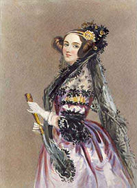
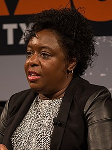
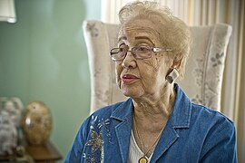

Mulheres Inspiradoras
Para celebrarmos o incrível talento e as conquistas das mulheres na área da tecnologia, vamos conhecer mulheres incríveis. Ao longo da história, mulheres têm desempenhado papéis fundamentais na inovação tecnológica, contribuindo para avanços significativos em diversas áreas, desde a programação de computadores até a exploração espacial.
Apesar dos desafios e obstáculos que enfrentaram, muitas mulheres pioneiras deixaram um legado duradouro, inspirando gerações futuras a seguir seus passos e desbravar novos caminhos na ciência, na engenharia e na computação. Reconhecer e valorizar suas contribuições é essencial para promover um ambiente mais inclusivo e diversificado na indústria tecnológica.
Aqui, apresentamos algumas dessas mulheres notáveis. Você vai ver um breve resumo, mas suas histórias inspiradoras podem ser acessadas no Wikipedia. Ao aprender sobre suas realizações, esperamos incentivar mais mulheres a ingressarem e prosperarem neste campo tão vital e dinâmico.
Ada Lovelace
Ada Lovelace foi uma matemática e escritora inglesa, conhecida por seu trabalho com Charles Babbage no projeto da máquina analítica, um precursor dos modernos computadores. Ela é frequentemente considerada a primeira programadora do mundo.
Para mais informações, visite Wikipedia.
Kimberly Bryant
Kimberly Bryant é uma engenheira elétrica e fundadora da Black Girls CODE, uma organização que visa introduzir meninas negras na área da tecnologia e da programação de computadores.
Para mais informações, visite Wikipedia.
Grace Hopper

Grace Hopper foi uma cientista da computação e almirante da Marinha dos Estados Unidos. Ela foi uma pioneira na programação de computadores, sendo uma das primeiras a utilizar a linguagem de programação COBOL.
Para mais informações, visite Wikipedia.
Katherine Johnson
Katherine Johnson foi uma matemática e cientista espacial norte-americana. Ela fez contribuições fundamentais para os programas espaciais da NASA, incluindo cálculos cruciais para as missões Apollo e o programa de ônibus espaciais.
Para mais informações, visite Wikipedia.
Margaret Hamilton
Margaret Hamilton foi uma cientista da computação e engenheira de software norte-americana. Ela liderou a equipe responsável pelo desenvolvimento do software de voo usado no programa Apollo da NASA.
Para mais informações, visite Wikipedia.
Hedy Lamarr

Hedy Lamarr foi uma atriz e inventora austríaca-americana. Ela co-desenvolveu um sistema de comunicação secreta durante a Segunda Guerra Mundial que serviu de base para tecnologias como Bluetooth e Wi-Fi.
Para mais informações, visite Wikipedia.